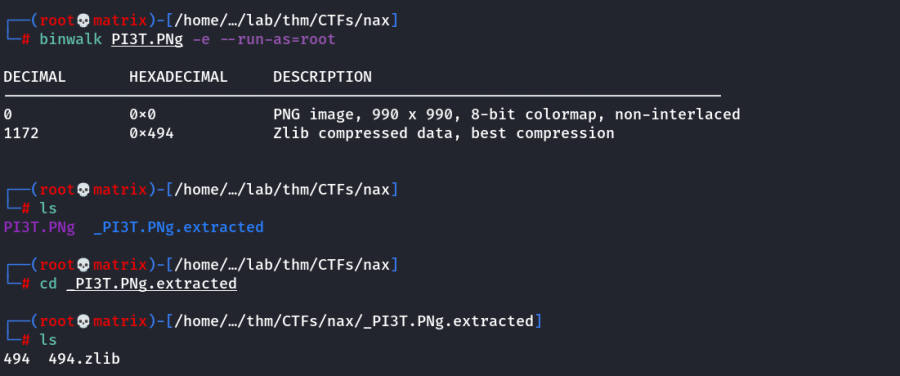

npiet
Sourced from THM: Nax
Enumerating the new location found. (/PI3T.PNg)
We downloaded the PNG file and checked with exiftool. Indeed it shows binary content

We got one answer though: Creator of File - Piet Mondrian
Binwalk also didn't give any particular results.

Then, we searched online for PIET steganography & looked for decoder.
Note: Piet as an esoteric language where code looks like abstract geometric pictures
We will use this link: https://www.bertnase.de/npiet/npiet-execute.php

The online site was showing errors. (As it needs the Picture in PPM format & within a certain size)
Windows
Windows executiblle does not need ppm format. We downloaded the windows executible and opened the PI3T.PNg file.

Linux
To install npiet in linux. Get the www.bertnase.de/npiet/npiet-1.3f.tar.gz compressed source code
First install the required library from https://github.com/libgd/libgd/releases by gettin the release libgd-2.3.3.tar.gz
To install both the source code. (First install the libgd library)
Use the following insdie the respective folders. (Preferably in /opt)
./configure
make
make install
To Uninstall
make uninstall
Note: In Linux, the .PNG format won't work. We need to convert it to .PPM
Open the PNG file in gimp and then export it to PPM format
We run as follows:
From both the run instances, we found long series of text which is repeated. Following is the string
nagiosadmin%n3p3UQ&9BjLp4$7uhWdY
Credentials Found
Username: nagiosadmin
Password: n3p3UQ&9BjLp4$7uhWdY